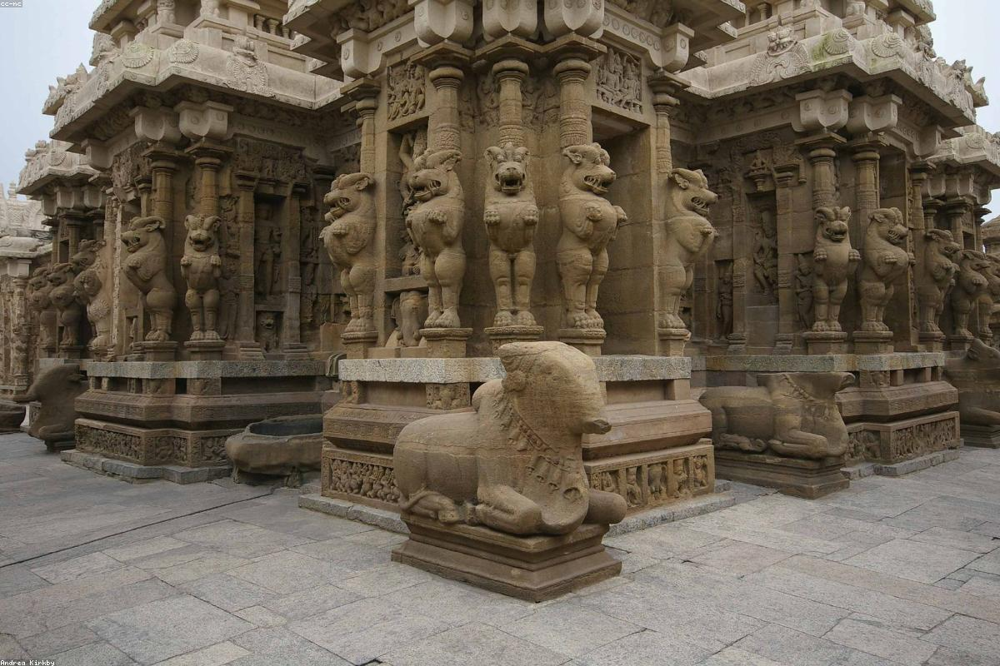

Tamil Nadu
Kanchipuram, one of the seven holiest cities in India, is a place where ancient faith and exquisite craftsmanship meet. Known as the "Golden City of Thousand Temples," it served as the capital of the Pallava and Chola dynasties, leaving behind an unparalleled legacy of Dravidian architecture. Beyond its spiritual significance, Kanchipuram is globally renowned for its traditional hand-woven silk sarees, prized for their rich gold borders and intricate designs. The city is a vibrant tapestry of majestic temples like Ekambareswarar and Kailasanathar, bustling silk emporiums, and the rhythmic sound of looms that have defined its identity for centuries.
Kanchipuram is located on the banks of the Vegavathi River, about 75 km from Chennai.
The best time to visit is from October to March. The Brahmotsavam festival in May is also a grand spectacle.
By Air: Chennai International Airport (approx. 65 km) is the nearest airport.
By Train: Kanchipuram has its own railway station, well-connected to Chennai and Pondicherry.
By Road: Very well-connected by highways; frequent buses and taxis run from Chennai and Bangalore.
- Wear comfortable cotton clothing and be prepared to walk inside large temple complexes.
- Beware of middlemen; for silk sarees, only visit Govt. recognized cooperatives or well-known showrooms.
- Hiring a local guide at the temples will help you appreciate the intricate carvings and legends.
- Try the "Kanchipuram Idli," a semi-spicy version of the traditionalidli, served specifically in this town.